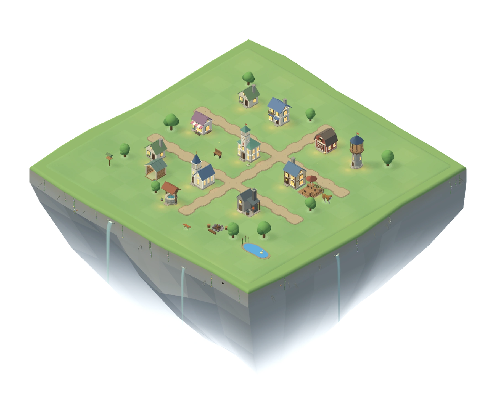
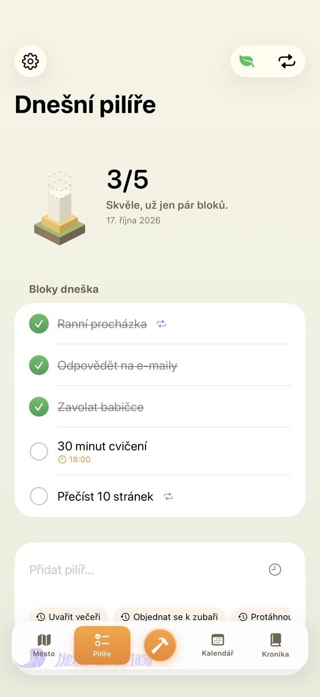
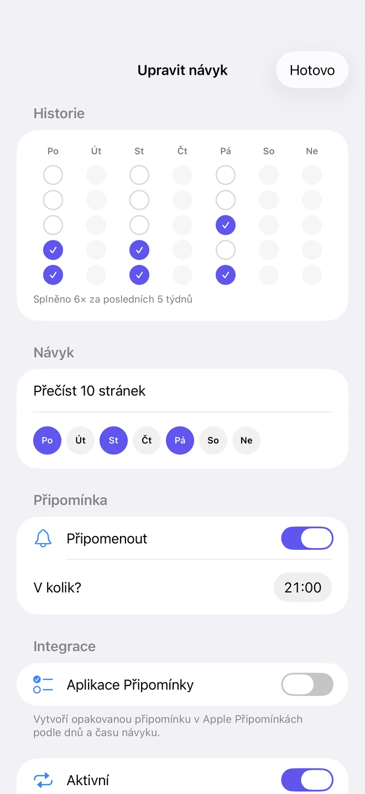
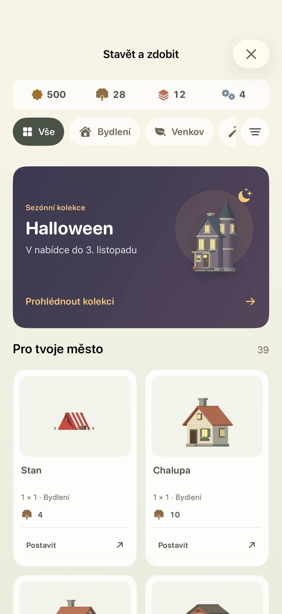
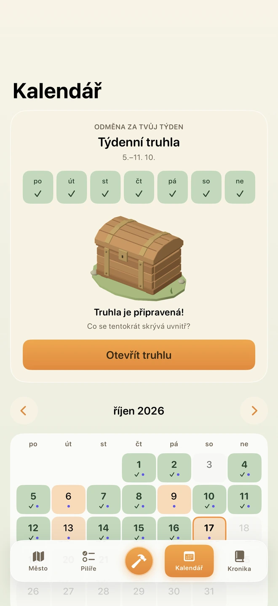
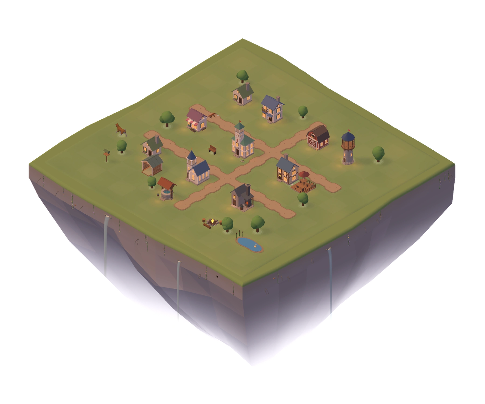

Z úkolu udělej opakující se pilíř
Existující úkol můžeš změnit na návyk. Vyber mu dny opakování, vlastní čas a volitelnou připomínku. Naplánovaný pilíř přidáš do Apple Kalendáře, návyk do Připomínek.
Úkoly a návyky s herní odměnou
Pilíře jsou úkoly, na kterých ti záleží. Těm, ke kterým se chceš vracet, nastavíš opakování. Za každé splnění získáš materiál na vlastní městečko.
Pro lidi s ADHD i každého, komu pomáhá vidět odměnu hned.
Ke stažení na App Storu
Od úkolu k pravidelnému návyku
Pilíř je tvůj úkol. Zavolat babičce, jít se projít nebo přečíst deset stránek. Můžeš mu dát čas a naplánovat si i zítřek.
Z úkolu uděláš pravidelný pilíř. Vybereš dny v týdnu a případně připomínku. V naplánované dny se objeví mezi dnešními úkoly. Opakováním si postupně buduješ návyk.
Dřevo dostaneš hned za splněný pilíř. Při uzavření dne získáš podle počtu hotových úkolů také cihly a ocel. Z materiálu si postavíš něco do městečka.
Podívej se dovnitř
Aktuální obrazovky aplikace s ukázkovými daty. Klepnutím si každou prohlédneš zblízka.
Úkoly na dnešek i plán na zítřek. Splněné věci máš na očích.

Vyber dny, čas a připomínku. Z úkolu uděláš pravidelný pilíř.

Získaný materiál utratíš za domy a výzdobu svého městečka.

Kalendář, týdenní truhla a odznaky za to, co se ti podařilo.


18:00 · Podvečer na ostrově
Slunce zapadá, v domech se rozsvěcí a u ohniště hoří oheň. Světlo na tvém ostrově se mění podle skutečného času.
Tvoje místo nad mraky
Domy stavíš, otáčíš a přesouváš podle sebe. Co zrovna nepotřebuješ, schováš do inventáře. Cesty kreslíš tahem prstu. Mezi ně se vejde rybníček, lavička nebo krmítko, na které opravdu přilétají ptáci.
A připravuje se mnohem víc.
Pes, husky, liška, vlk, srnec, kráva, kůň a alpaka si chodí po ostrově. Psovi postavíš boudu se jménem, doplníš misku a můžeš ho pohladit.
Na Halloween a Vánoce přibývají sezónní stavby a dekorace. Co si pořídíš, zůstane v inventáři i po konci sezóny.
Každodenní používání
Existující úkol můžeš změnit na návyk. Vyber mu dny opakování, vlastní čas a volitelnou připomínku. Naplánovaný pilíř přidáš do Apple Kalendáře, návyk do Připomínek.
V kalendáři vidíš splněné pilíře, návyky i postavené budovy. Za týden s alespoň jedním splněným pilířem každý den získáš truhlu s překvapením.
Roste, když aplikaci otevřeš, a zvyšuje odměny až na 1,6násobek. Za každý vynechaný den klesne o bod. Postavené město ti zůstává.
Najdi si uzavřený den i to, co jsi během něj postavil. Za milníky získáš odznaky, které už ti nikdo nevezme.
Proč Pilíře vznikly
Koupit ženě kytku, ozvat se rodině nebo vyrazit se psem na pořádnou procházku. Právě takovým věcem říkám pilíře dne. Chtěl jsem pro ně místo, kam se budu rád vracet.
Chtěl jsem se k těm úkolům vracet a z některých si vytvořit návyk. V Pilířích za každé splnění získám materiál a můžu si něco postavit. Městečko mi tak připomíná, co se mi už podařilo.
Tvoje úkoly patří tobě
Aplikace funguje offline a nepotřebuje účet. Úkoly, návyky ani tvoje město neposílá na server. Neobsahuje reklamy, analytiku ani sledování.
První verze Pilířů je dostupná zdarma na App Storu pod názvem Pilíře: Habits & Tiny Town. Stáhneš si ji do iPhonu s iOS 26.5 nebo novějším. Aplikace je v češtině, slovenštině a angličtině.
Pilíře jsou zdarma, bez reklam a bez nákupů v aplikaci. Materiál a herní mince získáváš hraním.
Nemusíš. Připomínky, oznámení i export do Kalendáře jsou volitelné. Přístup aplikace žádá až pro funkci, kterou si vybereš. Kalendář používá jen pro zápis, tvoje existující události nečte.
V nastavení aplikace vyber Smazat všechna data. Data odstraní také smazání aplikace. Pokud používáš zálohu iPhonu na iCloud, může obsahovat i data Pilířů; k té máš přístup ty a Apple, ne tvůrce aplikace.
Ke stažení na App Storu
Pilíře: Habits & Tiny Town si už můžeš zdarma stáhnout na App Storu. Napiš si první úkol, splň ho a postav první kousek svého městečka.
Stáhnout na App Storu